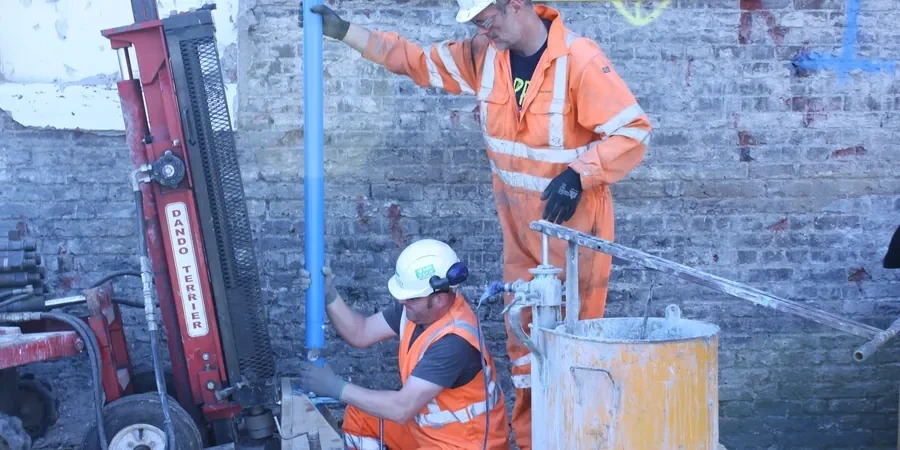

En nuestra oficina de Gijón, ofrecemos servicios integrales de ingeniería geotécnica adaptados al contexto local del Principado de Asturias. Desde la caracterización del subsuelo mediante ensayos SPT y sondeos mecánicos hasta el diseño de cimentaciones superficiales y profundas, nuestro equipo aborda cada proyecto con un enfoque multidisciplinar. Realizamos estudios de mecánica de suelos, análisis de estabilidad de taludes y asesoría en excavaciones profundas, siempre cumpliendo con la normativa vigente. Nuestra experiencia consolidada en la región nos permite interpretar correctamente las condiciones del terreno y proponer soluciones seguras y eficientes para edificaciones, infraestructuras y obras lineales en Gijón y su área metropolitana.
